Ventilation
© Tim Lovett Aug 2005 | Home | Menu
General arrangements for air delivery within the Ark
Air supply methods for Noah's Ark
1. Still Air - convection
2. Wind - longitudinal directed wind
3. Motion - wave action
4. Heat - furnace driven
5. Mechanical - forced ventilation
|
 Ventilation.
Adequate ventilation at all times? A
look at air-flow options utilizing natural ventilation such as
convection currents or wind. Is forced ventilation needed? Is the
window opening large enough? Ventilation.
Adequate ventilation at all times? A
look at air-flow options utilizing natural ventilation such as
convection currents or wind. Is forced ventilation needed? Is the
window opening large enough?
> See
Ventilation here
|
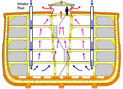
|
1. Still Air: Convection currents
Convection would drive the airflow when there is no wind or motion. This
could occur in a period of very still weather at sea, or perhaps after beaching during the long
wait as the ground was drying out. To maximize airflow, the roof of the central
hatch could be opened.
Animals could be housed inboard and food near the hull wall. This allows the
animals to get maximum airflow and lighting, using slatted floors to allow air
draught. Since the animals are warm and heat their surrounding space, this air rises up through each slatted floor
and out through the opened hatch roof. To prevent water (from waves) entering the
intake, the ventilation pipe extends above the roof a safe distance.
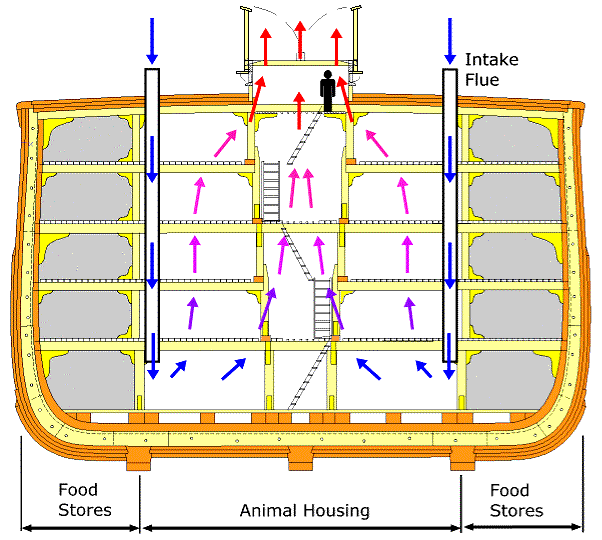
1,2 Wind enhanced convection
If it is raining, the hatch roof would be closed. This limits the airflow.
Positive pressure at the intake could be attained by rear-facing openings - in
the pattern of a classic ship ventilator.
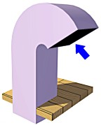
Classic design of a ship ventilator inlet. The opening extends above the deck
to avoid waves, and faces downward to avoid rain.
The wind should be traveling from stern to bow, due to the directional
control designed into the hull. Flow restriction would obviously be caused by
the limited size of the downdraft pipes.
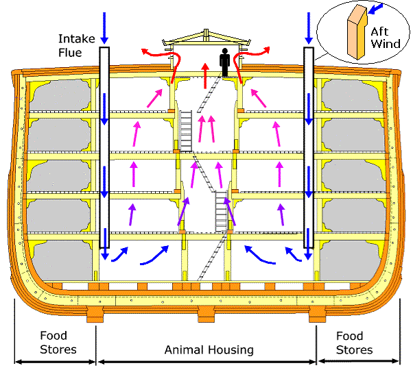
The next image employs the same idea but the food storage zone does the job of the down draft pipes.
The convection powered updraft is exactly the same, rising through slatted flooring to exit through the skylight hatch.
The advantage is that the downdraft has no cross-sectional area limit. Disadvantage is that food area must be fully walled off.
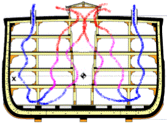
Next is a downdraft via frame spacing in the hull wall. This only works if uninterrupted voids can be
arranged between frames, which is something of a structural compromise. Such an
arrangement might be acceptable away from the midship area, where bending induced stresses are lower. Primary
bending shear peaks at approx 1/4 from the hull ends, so it doesn't leave many
places to vent between frames. This image also shows a 3D type flow, the
incoming air entering the aft hatch and exit is through the fore hatch, with
appropriate partitioning.
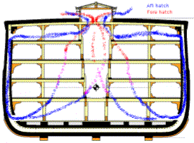
2. Longitudinal Airflow: Non convecting.
Since the Ark is supposed to be aligned so that the wind is running from
stern to bow. With the hull divided into 6 or 7 holds by structural
transverse bulkheads, each hold would be separately ventilated - except for a
limited flow that could be achieved by opening the bulkhead doors.
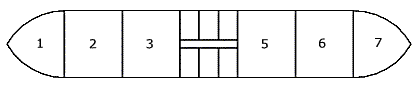
View of hull showing seven holds, divided by six bulkheads.
In the profile view below, air enters the aft (back) hatch, then travels
around a baffle that forces the airflow to penetrate to the lowest level before
returning through the fore (front) hatch. Note that the internal decks are
permeable to the air, with gaps between decking boards.
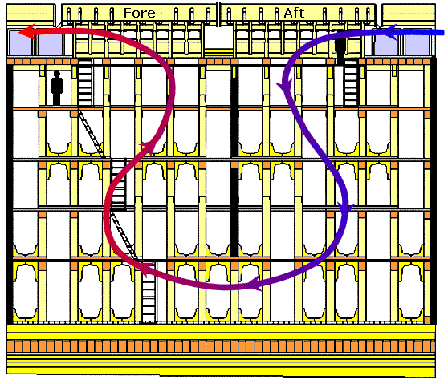
A positive pressure might be generated by rear opening covers in the aft hatch.
Forward opening covers in the fore hatch induce a negative pressure (slight
vacuum) which helps to draw the air out. This push/pull method ignores
convection since the aft part of the hold must have a general downdraft.
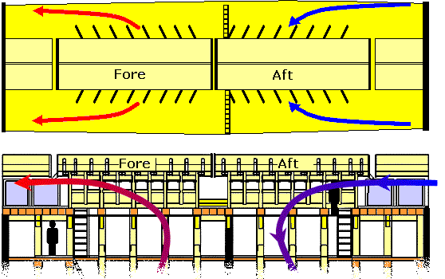
3. Motion: Waves but no Wind.
This should be relatively unlikely since waves are generated by the action of
wind. This situation might possibly occur prior to the Genesis 8:1 wind, with
waves generated by distant tsunami events or currents. One suggestion that
has been put forward is for airflow driven by a "moon pool", an
inboard well more often used for drilling or release of underwater equipment.
E.g. USNS Mizar shown below.
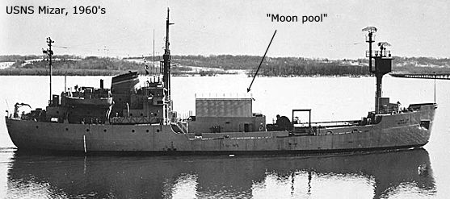
USNS Mizar: http://www.history.navy.mil/photos/images/h79000/h79130.jpg.
The well was used for releasing submersible equipment which was housed in the
structure above it. Hydraulic doors sealed off the "moon pool".
Excerpt from http://patriot.net/~eastlnd2/Mizar.htm;
We had to live with constant heavy breathing as a result of this arrangement.
Mizar heaved and "inhaled" to relieve suction built up in the well's
air space below the doors. As she went down, exhaling a truly huge breath, most
air went out the relief vents that were about 10 inches deep by 18 wide... The vents didn't do the whole job in rough weather. When that happened the
doors would rise an inch or so then slam tight...Anyway, the breathing,
whistling and slamming could keep some people up at night...There was no solution if part of the vent system ran through your quarters,
as it did in those I usually had, where you had to learn to live with heavy
breathing even in mild seas.
Heavy breathing "even in mild seas" seems to indicate this method
should have enough power to drive a forced ventilation system on board Noah's
Ark. The idea of a moon pool for the Ark appears to be first suggested by Dave Fasold, who later
made the surprising claim that gopher wood means "reeds". But despite
other dubious assertions, the idea of a moon pool to drive air ventilation can
be evaluated on its own merit.
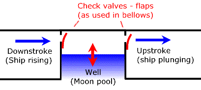
Converting oscillating flow to continuous flow using a pair
of valves. This is exactly how a bellows works, an ancient technology.
Pumping air using wave power. How a "moon pool" could act as an air
pump to drive ventilation. The surface area of the well would determine air flow
rates in a given sea state. Locating the moon pool nearer the bow or stern would
increase amplitude (and thus air flow) and could help to dampen pitching motion.
4. Heat Driven.
Pouring rain, high temperature and humidity and with little wind or movement
would be the worst case ventilation situation. One solution is to use a
furnace to heat air and create a draught up a
specially constructed flue, such as a pair of concentric pipes with the inner as
the chimney and the outer as the air draft. This would give Noah's Ark a chimney
as well as ventilator stacks, and a way to cook, heat, burn dung and dry out
clothes. It would be best to have the fire located low down to give the longest
hot chimney, and hence the best draft effect. To get really tricky, the warm
draft could be used to dry dung also, with the fumes venting directly to
atmosphere.
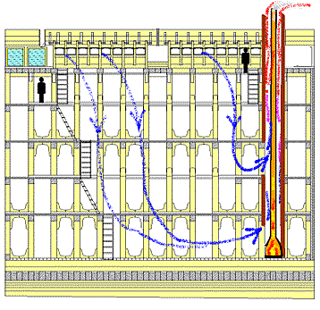
|
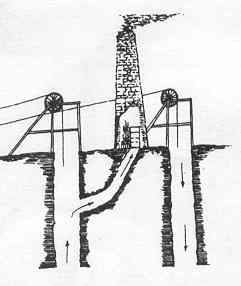
|
Fire
Driven Mine Ventilation to remove any dangerous build up of the
gases. This was accomplished by sinking two shafts. Near the top of
one of them a fire was lit causing the air/gas mixture to rise up
the shaft and draw out the gases. At the same time the foul air
would be replaced by fresh air drawn down the second shaft. Before
the advent of air pumps and fans, this was the favored method, with
open fires replaced by closed furnaces inserted near the top of one
shaft.
Shropshireroots.org.uk
[Image: Shropshire Newspapers]
|
5. Mechanical Ventilation.
If adequate ventilation is still not achieved despite convection from animal
body heat, wind pressure differentials at the skylight, air displacement by wave
motion in a "moon pool" and draught from a furnace, there is still
one more option - mechanically assisted air pump.
The general
options for some method of assisted flow might include bellows (positive displacement) or fans (dynamic). Animal
power is the logical choice, but this would be the most intensive solution
in terms of maintenance and care.
Conclusion
The combined ventilation potential of convection currents, wind pressure and
wave motion is probably enough to ensure airflow at all times. Mechanical ventilation looks
unlikely, especially since dead calm conditions are not very Biblical. After
all, the "Ark moved about the surface of the waters". This page looks
only at general arrangements, without dealing with air flow rates, sizes of
windows, temperatures, latent heat and the like. In other words, we have explored some
ventilation options without getting into quantitative assessment.
References
1. Ventilation: Woodmorappe, J.,Noah's Ark: A
Feasibility Study, ICR, p37-42, 1996.
www.worldwideflood.com
{kind=link}
{kind=link}